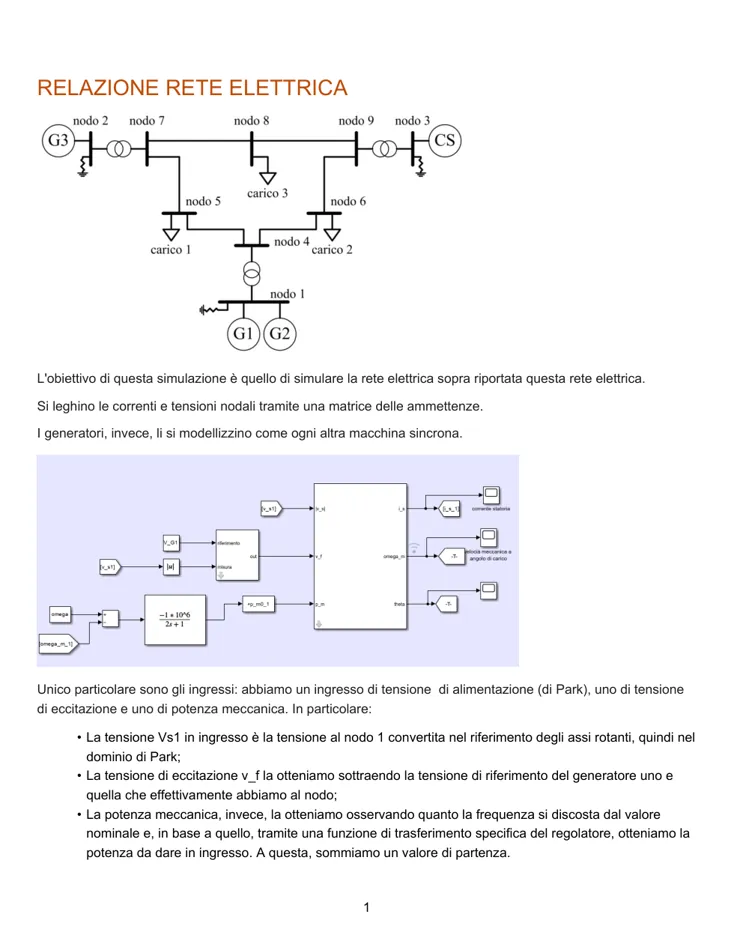

Overview
As part of my electrical engineering modelling coursework, I simulated an interconnected power network using synchronous-generator models, a nodal admittance representation, loads and a synchronous compensator. The work connects the mathematical description of an electrical network to its dynamic behaviour and to voltage/frequency regulation.

What I modelled
Study topics & results
Separate reports document the network model, regulator response and dynamic approximations of synchronous machines. Their focus is the behaviour of modelled systems under disturbances — not the implementation of real distribution-substation automation.
- Network dynamics with synchronous generators and a synchronous compensator.
- Voltage and reactive-power regulation under a load change.
- Frequency regulation and load-sharing across generators.
- Model reduction, transient and quasi-steady-state approximations.
Research direction
This work is a foundation for my interest in power distribution automation, protection, monitoring, and networked control. I would like to develop the associated control and decision-making methods through a research thesis.